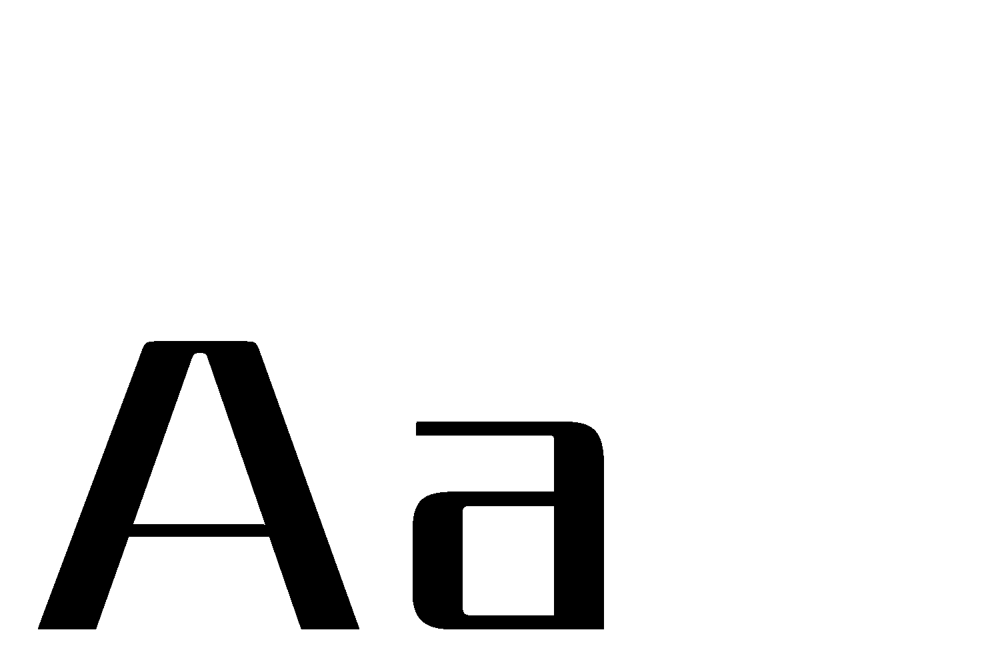

Oakley Typeface (2022)
Typeface design
Oakley is a display typeface inspired by Oakley which shows challenging and tenacious.
This idea is expressed through the structure, difference between horizontal stroke and vertical stroke.
오클리
서체 디자인
오클리는 ë””ìŠ¤í”Œë ˆì´ìš© 산세리프 서체로, 브랜드 오클리의 강인하고 ë„ì „ì ì¸ 인상에 영감을 받아 ì œì‘ë˜ì—ˆë‹¤.
이는 서체의 구조 내에서 보여지는 수평축과 수직축의 강한 대비를 통해 드러난다.


